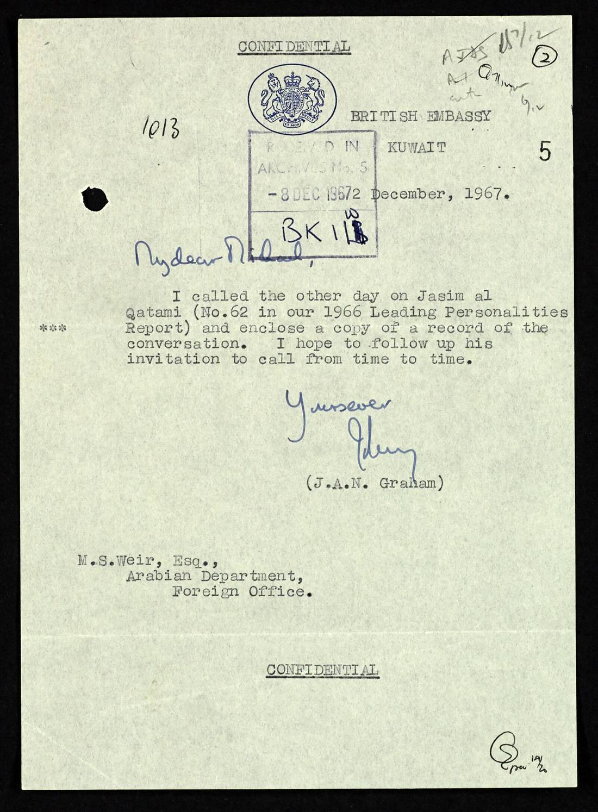

December 1967 · British Embassy covering letter and record of conversation
A British diplomat calls on Jassim Al-Qatami at his Shuwaikh office
What it is
A member of the Embassy calls on Jasim al Qatami at the Equipment and Specialities Company, next to the Shuwaikh Carpentry Shop. They speak about free speech, and Jassim remarks that the press in Kuwait was not so free. Jassim invites him to call again.
Why it matters
It gives the location of Jassim's business office in Shuwaikh in 1967 and his own words on press freedom.
Who is meant
The same Jassim Al-Qatami as the records that give his full name: Director of Police, resigned at Suez, later a nationalist member of the National Assembly.
Page copies


Original text
English translation
Sources
The National Archives, London, digitised by the Arabian Gulf Digital Archive (agda.ae). Images reproduced by permission of The National Archives, London, England.
Archive reference
- FCO 8/616 · Government appointments
How this text was made: Typed from the archive's own text reading of the scan, corrected against the scan where the reading was garbled. … marks text left out. Arabic translation by Claude; please review.
Open in the interactive site